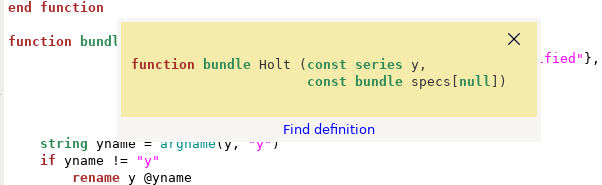

gretl_edit is a lightweight, special-purpose supplementary program for use in conjunction with gretl. It comprises a tabbed script editor along with apparatus to execute scripts (via gretlcli) and view their output.
You're probably aware that the gretl GUI program has its own built-in script editor. So why are we offering a stand-alone editing program? Well, here's the context for which gretl_edit is designed: You're working on a relatively complex code project which involves defining several functions (perhaps you're designing a function package) and wish to carry out the following sort of cycle.
edit code execute the code, inspect results, check for bugs revise code execute again...
If that's something you do from time to time, we recommend giving gretl_edit a try. If it's not, you can probably ignore this program.
Note that gretl_edit is “stateless”. Unlike the main gretl GUI, there are no saved models, matrices, bundles and whatnot. The only state preserved is that of the script, or scripts, being edited (well, with one exception noted below). In the context we're talking about that's probably what you want: each time a script is executed it starts with a “blank slate”. That means that if a script uses a dataset, it must include a command to open the dataset.
Obviously, gretl_edit supports hansl, gretl's own scripting language. Less obviously, it also supports languages that are covered by gretl's “foreign” apparatus: R, Octave, Julia, Ox, Python and Stata. In the foreign case the script editor is not as full-featured as for hansl: it offers syntax highlighting but not automatic indentation or auto-completion.
For hansl code, gretl_edit offers special means of navigating in the realm of function definitions:
Ctrl-F pops up a search bar at the foot of the editor window. Besides the usual search entry-box there's a button labeled “Go to function”. Click this button to pop up a list of the functions defined within the window. Select a function to go to its definition.
The “Run” button (cogs) in the toolbar at the top of the editor window gives a little menu with the choice of executing the script (with output going to a separate window) or (re-)loading the functions defined in the window. In this context “loading” means that the functions are loaded into gretl_edit's memory-space. Once the functions are loaded, you have these options:
With the cursor in the name of a function defined in the window (for example in a call to that function), Alt-. takes you to the definition of that function, and then Alt-, takes you back to where you came from.
You can click the question-mark button in the toolbar, move the “query” cursor into the name of a function defined in the editor, and click to get a pop-up showing the signature of the function along with a link to its definition. This is an extension of the usual apparatus for querying built-in gretl functions -- see the example below.
Moreover, if the function contains a comment of the kind
/* -doc- This function does this and that */This works a bit like a Python docstring, that is a text element with a (possibly extended) description of what the function does. This too will be shown in the pop-up window.

MS Windows: Our gretl installers for Windows include gretl_edit.exe. You can find it in the gretl folder under “Program Files”.
Linux: The gretl packages for Debian and Fedora include gretl_edit.
macOS: gretl_edit can be installed via a supplementary package; see here for details.